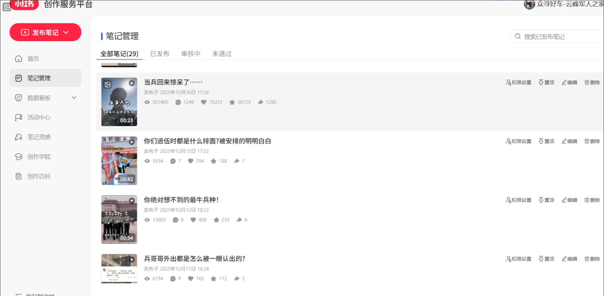

新媒体运营，线索导向
内容要被看见
也要带来有效咨询
面向军人、汽车、招商与企业服务等垂直场景，负责选题脚本、图文视频制作、账号互动与线索承接协同。
- 军人账号三个月涨粉
- 2.6万
- 招商内容累计线索
- 100+条
- 部门全部账号累计线索
- 1000+条

军人账号增长
围绕军旅回忆、退伍生活和军车话题策划内容，独立完成选题、脚本及后期制作，用具体人物与真实情绪建立账号辨识度，三个月涨粉2.6万。
从内容到招商咨询
针对低速四轮车及代理招募场景，围绕车型使用和经营问题制作内容。把产品特点写进具体场景，在评论与咨询中识别需求，再与销售协同承接。

按照业务目标复盘
账号内容看用户是否愿意持续关注，商业内容看是否看懂产品、提出问题和产生咨询。结合播放、评论、涨粉和线索反馈，调整选题、表达及后续内容。
1000+为部门所有账号的累计线索，包含不同项目；不与单项目询盘重复相加。